Étudiant BTS SIO SLAM
Portfolio BTS SIO SLAM
J'aide à transformer des idées complexes en interfaces rapides, claires et performantes.
J'aide à transformer des idées complexes en interfaces rapides, claires et performantes.
Objectif : Gérer l'assistance technique et assurer la continuité de service à travers un cycle complet de traitement d'incidents.
Réalisation et répartition de tickets, organisation du travail en équipe via un outil de gestion de projet.
Objectif : Concevoir une application de gestion pour l'organisation et l'inscription des membres lors des JPO de la M2L.
Application web pour les Journées Portes Ouvertes de la M2L.
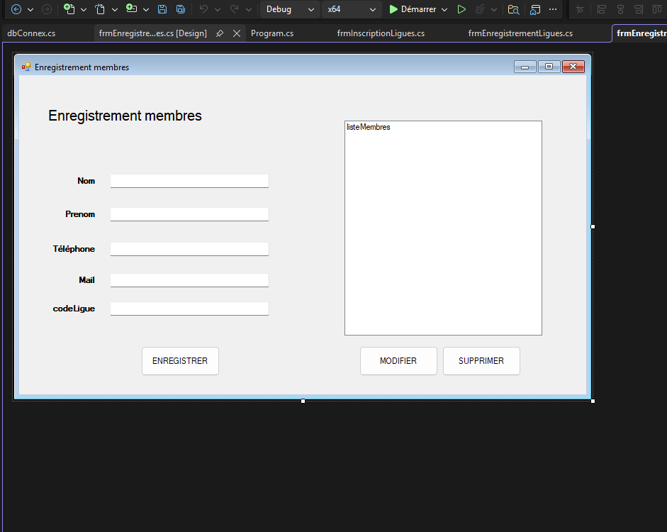
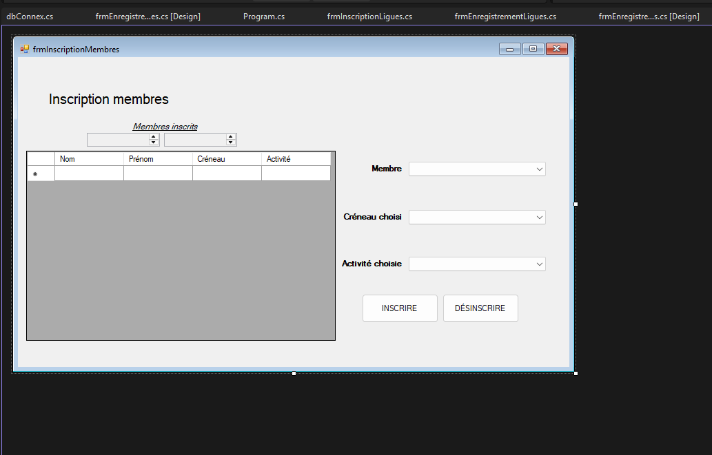
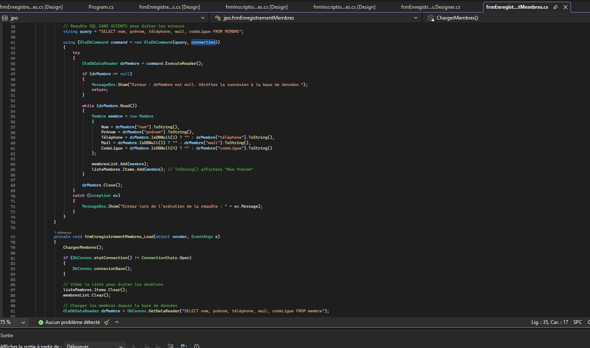
Participation active à la planification et validation des étapes.
Objectif : Développer une plateforme web collaborative pour le suivi des rencontres sportives de la Maison des Ligues.
Mise en place d'un nouveau site dynamique pour l'organisation.
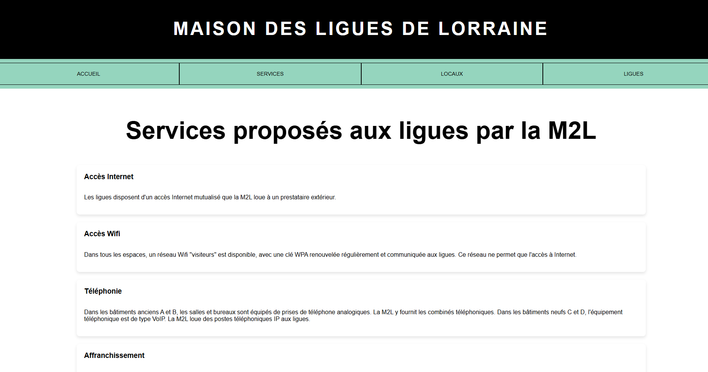
Planification et organisation du projet via Wekan — définition des tâches, estimation des délais, répartition des rôles.

Objectif : Piloter l'organisation technique d'un championnat, incluant la gestion des matchs, scores et du corps arbitral, puis déployer l'application.
Déploiement et mise à disposition de l'application utilisateur.
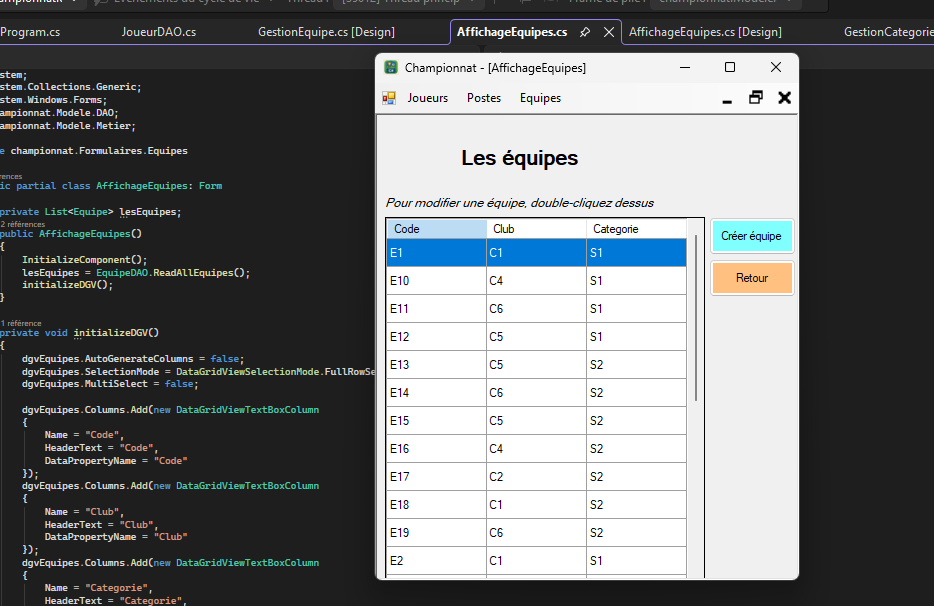
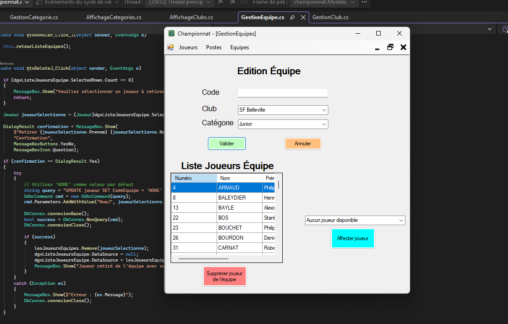
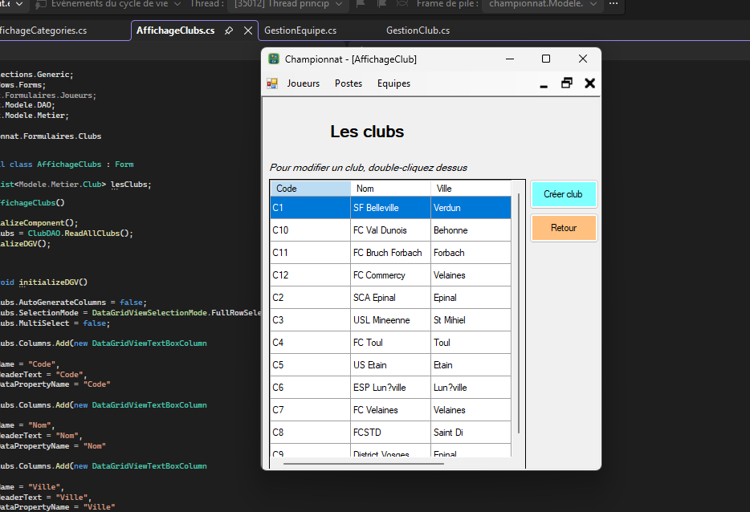
Suivi des étapes de développement et de déploiement.

Objectif : Faire évoluer le portail web de la M2L en ajoutant une couche dynamique côté serveur et en sécurisant les formulaires.
Planification et organisation du projet de site dynamique pour la M2L.

Objectif : Développer un prototype fonctionnel de capteur de qualité de l'air avec documentation technique complète.
Prototype fonctionnel et documentation technique complète.
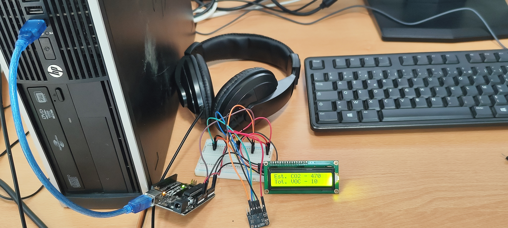
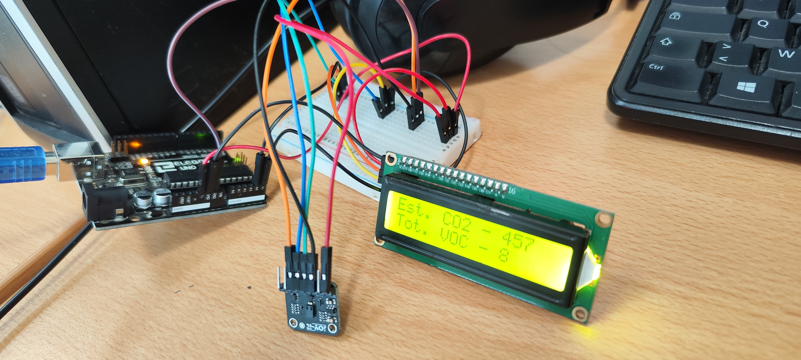
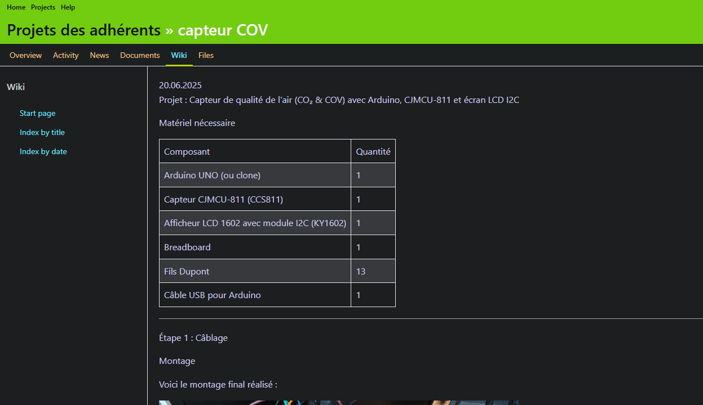
Ressources consultées pour l'apprentissage des capteurs Arduino/Microcontrôleur.
Objectif : Développer un serveur sur Raspberry Pi permettant aux utilisateurs de déposer et gérer des fichiers depuis n'importe quel appareil connecté au Wi-Fi.
Déploiement d'un service WiFi + serveur web + stockage USB accessible sans configuration.
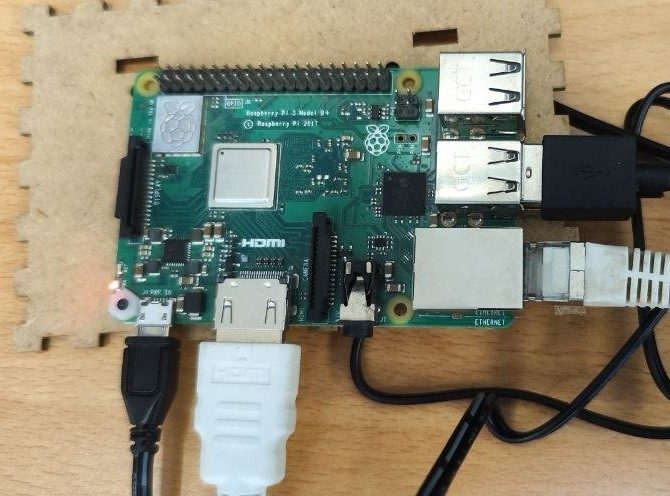
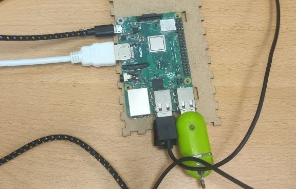

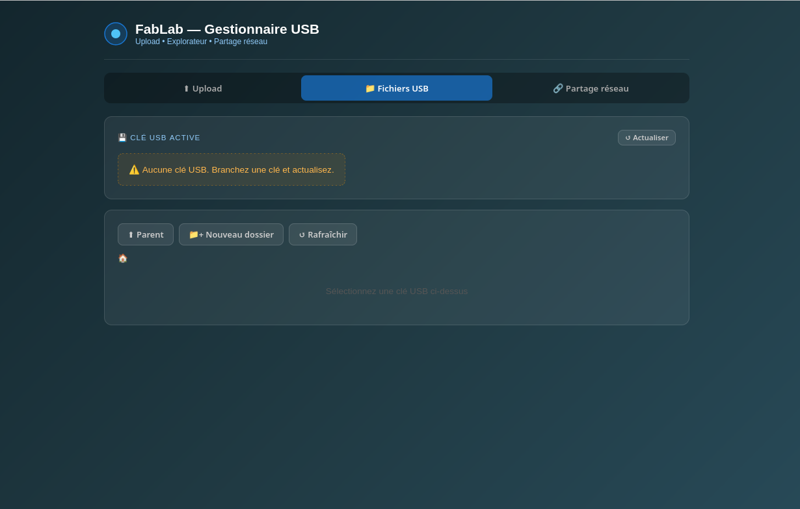
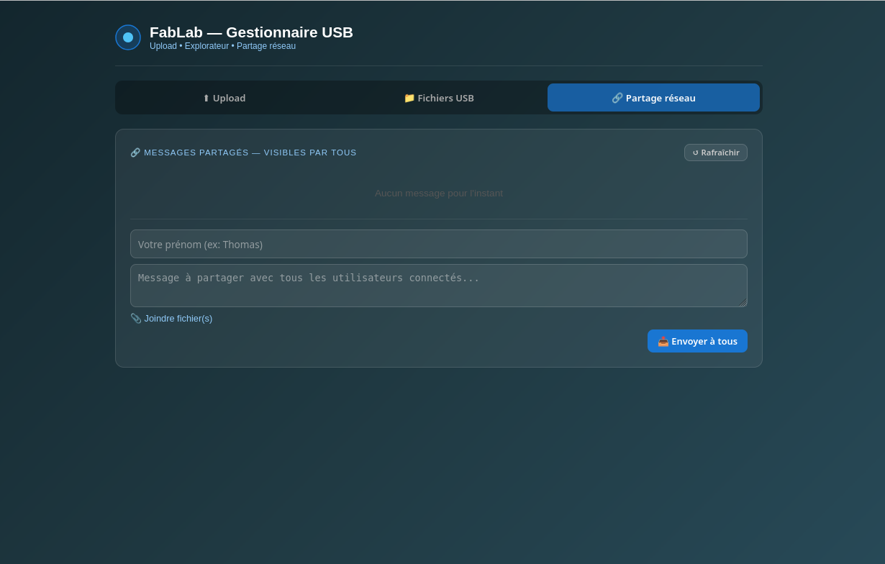
Durée : 5 semaines au Fablab Cohabit
Observation du fonctionnement du Fablab, réparation d'un ordinateur en panne (carte graphique), création d'un bot JavaScript via SSH, découverte de plusieurs langages (C++, JavaScript, COBOL).
Projet capteur de qualité de l'air (COV et CO₂) avec un camarade : câblage LCD I2C, programmation Arduino, tests dans différents environnements.
Observation du matériel du Fablab et réparation d'équipements informatiques.
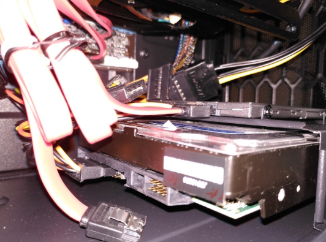

Tests et validation du capteur de qualité de l'air dans différents environnements.


Découverte et utilisation de WordPress pour la création de sites web.

Développement et programmation du capteur pour afficher les résultats en temps réel.


Contenu à venir — réalisations et compétences de 2ème année.
Analyse de l'évolution des outils comme Copilot, Cursor et Mistral AI en 2026.